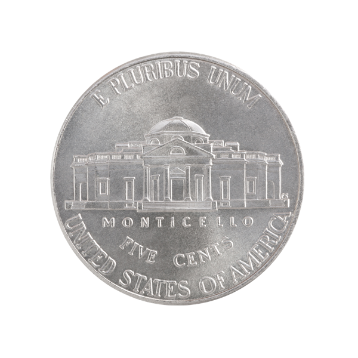
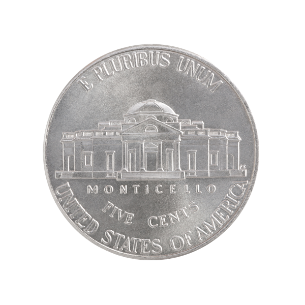

Ландыши — символ чистоты, любви и грусти. Карл Линней, создавая знаменитую классификацию, не устоял перед обаянием цветка и дал ему весьма поэтичное название «Convallaria majalis», которое означает «лилия долин, которая цветет в мае».
В центре реверса находится изображения цветка ландыша исполненное методом тампопечати. Вверху надпись: CONVALLARIA — латинское название вида цветка. В нижней части надпись — год чеканки 2013. Монета укомплектована подарочным демонстрационным футляром.
Цена: 2 080 ₽